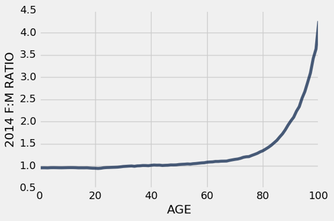

五、表格
原文：Tables
译者：飞龙
自豪地采用谷歌翻译
表格是表示数据集的基本对象类型。 表格可以用两种方式查看：
- 具名列的序列，每列都描述数据集中所有条目的一个方面，或者
- 行的序列，每行都包含数据集中单个条目的所有信息。
为了使用表格，导入所有称为datascience的模块，这是为这篇文章创建的模块。
from datascience import *
空表格可以使用Table创建。空表格是实用的，因为他可以扩展来包含新行和新列。
Table()
表格上的with_columns方法使用带有附加标签的列，构造一个新表。 表格的每一列都是一个数组。 为了将一个新列添加到表中，请使用标签和数组调用with_columns。 （with_column方法具有相同的效果。）
下面，我们用一个没有列的空表开始每个例子。
Table().with_columns('Number of petals', make_array(8, 34, 5))
| Number of petals |
|---|
| 8 |
| 34 |
| 5 |
为了添加两个（或更多）新列，请为每列提供一个数组和标签。 所有列必须具有相同的长度，否则会发生错误。
Table().with_columns(
'Number of petals', make_array(8, 34, 5),
'Name', make_array('lotus', 'sunflower', 'rose')
)
| Number of petals | Name |
|---|---|
| 8 | lotus |
| 34 | sunflower |
| 5 | rose |
我们可以给这个表格一个名词，之后使用另外一列扩展表格。
flowers = Table().with_columns(
'Number of petals', make_array(8, 34, 5),
'Name', make_array('lotus', 'sunflower', 'rose')
)
flowers.with_columns(
'Color', make_array('pink', 'yellow', 'red')
)
| Number of petals | Name | Color |
|---|---|---|
| 8 | lotus | pink |
| 34 | sunflower | yellow |
| 5 | rose | red |
with_columns方法每次调用时，都会创建一个新表，所以原始表不受影响。 例如，表an_example仍然只有它创建时的两列。
flowers
| Number of petals | Name |
|---|---|
| 8 | lotus |
| 34 | sunflower |
| 5 | rose |
通过这种方式创建表涉及大量的输入。 如果数据已经输入到某个地方，通常可以使用 Python 将其读入表格中，而不是逐个单元格地输入。
通常，表格从包含逗号分隔值的文件创建。这些文件被称为 CSV 文件。
下面，我们使用Table的read_table方法，来读取一个 CSV 文件，它包含了一些数据，Minard 在他的拿破仑的俄罗斯战役的图片中使用。 数据放在名为minard的表中。
minard = Table.read_table('minard.csv')
minard
| Longitude | Latitude | City | Direction | Survivors |
|---|---|---|---|---|
| 32 | 54.8 | Smolensk | Advance | 145000 |
| 33.2 | 54.9 | Dorogobouge | Advance | 140000 |
| 34.4 | 55.5 | Chjat | Advance | 127100 |
| 37.6 | 55.8 | Moscou | Advance | 100000 |
| 34.3 | 55.2 | Wixma | Retreat | 55000 |
| 32 | 54.6 | Smolensk | Retreat | 24000 |
| 30.4 | 54.4 | Orscha | Retreat | 20000 |
| 26.8 | 54.3 | Moiodexno | Retreat | 12000 |
我们将使用这个小的表格来演示一些有用的表格方法。 然后，我们将使用这些相同的方法，并在更大的数据表上开发其他方法。
表格的大小
num_columns方法提供了表中的列数量，num_rows是行数量。
minard.num_columns
5
minard.num_rows
8
列标签
labels方法可以用来列出所有列的标签。 对于minard，并不是特别有用，但是对于那些非常大的表格，并不是所有的列都在屏幕上可见。
minard.labels
('Longitude', 'Latitude', 'City', 'Direction', 'Survivors')
我们使用relabeled修改列标签。这会创建新的表格，并保留minard不变。
minard.relabeled('City', 'City Name')
| Longitude | Latitude | City Name | Direction | Survivors |
|---|---|---|---|---|
| 32 | 54.8 | Smolensk | Advance | 145000 |
| 33.2 | 54.9 | Dorogobouge | Advance | 140000 |
| 34.4 | 55.5 | Chjat | Advance | 127100 |
| 37.6 | 55.8 | Moscou | Advance | 100000 |
| 34.3 | 55.2 | Wixma | Retreat | 55000 |
| 32 | 54.6 | Smolensk | Retreat | 24000 |
| 30.4 | 54.4 | Orscha | Retreat | 20000 |
| 26.8 | 54.3 | Moiodexno | Retreat | 12000 |
但是，这个方法并不修改原始表。
minard
| Longitude | Latitude | City | Direction | Survivors |
|---|---|---|---|---|
| 32 | 54.8 | Smolensk | Advance | 145000 |
| 33.2 | 54.9 | Dorogobouge | Advance | 140000 |
| 34.4 | 55.5 | Chjat | Advance | 127100 |
| 37.6 | 55.8 | Moscou | Advance | 100000 |
| 34.3 | 55.2 | Wixma | Retreat | 55000 |
| 32 | 54.6 | Smolensk | Retreat | 24000 |
| 30.4 | 54.4 | Orscha | Retreat | 20000 |
| 26.8 | 54.3 | Moiodexno | Retreat | 12000 |
常见的模式时将原始名称minard赋给新的表，以便minard未来的所有使用，都会引用修改标签的表格。
minard = minard.relabeled('City', 'City Name')
minard
| Longitude | Latitude | City Name | Direction | Survivors |
|---|---|---|---|---|
| 32 | 54.8 | Smolensk | Advance | 145000 |
| 33.2 | 54.9 | Dorogobouge | Advance | 140000 |
| 34.4 | 55.5 | Chjat | Advance | 127100 |
| 37.6 | 55.8 | Moscou | Advance | 100000 |
| 34.3 | 55.2 | Wixma | Retreat | 55000 |
| 32 | 54.6 | Smolensk | Retreat | 24000 |
| 30.4 | 54.4 | Orscha | Retreat | 20000 |
| 26.8 | 54.3 | Moiodexno | Retreat | 12000 |
访问列中的数据
我们可以使用列标签来访问列中的数据数组。
minard.column('Survivors')
array([145000, 140000, 127100, 100000, 55000, 24000, 20000, 12000])
五列的下标分别为0, 1, 2, 3, 4。Survivors列也可以使用列下标来访问。
minard.column(4)
array([145000, 140000, 127100, 100000, 55000, 24000, 20000, 12000])
数组中的八个条目下标为0, 1, 2, ..., 7。列中的条目可以使用item访问，就像任何数组那样。
minard.column(4).item(0)
145000
minard.column(4).item(5)
24000
处理列中的数据
因为列是数组，所以我们可以使用数组操作来探索新的信息。 例如，我们可以创建一个新列，其中包含 Smolensk 之后每个城市的所有幸存者的百分比。
initial = minard.column('Survivors').item(0)
minard = minard.with_columns(
'Percent Surviving', minard.column('Survivors')/initial
)
minard
| Longitude | Latitude | City Name | Direction | Survivors | Percent Surviving |
|---|---|---|---|---|---|
| 32 | 54.8 | Smolensk | Advance | 145000 | 100.00% |
| 33.2 | 54.9 | Dorogobouge | Advance | 140000 | 96.55% |
| 34.4 | 55.5 | Chjat | Advance | 127100 | 87.66% |
| 37.6 | 55.8 | Moscou | Advance | 100000 | 68.97% |
| 34.3 | 55.2 | Wixma | Retreat | 55000 | 37.93% |
| 32 | 54.6 | Smolensk | Retreat | 24000 | 16.55% |
| 30.4 | 54.4 | Orscha | Retreat | 20000 | 13.79% |
| 26.8 | 54.3 | Moiodexno | Retreat | 12000 | 8.28% |
要使新列中的比例显示为百分比，我们可以使用选项PercentFormatter调用set_format方法。 set_format方法接受Formatter对象，存在日期（DateFormatter），货币（CurrencyFormatter），数字和百分比。
minard.set_format('Percent Surviving', PercentFormatter)
| Longitude | Latitude | City Name | Direction | Survivors | Percent Surviving |
|---|---|---|---|---|---|
| 32 | 54.8 | Smolensk | Advance | 145000 | 100.00% |
| 33.2 | 54.9 | Dorogobouge | Advance | 140000 | 96.55% |
| 34.4 | 55.5 | Chjat | Advance | 127100 | 87.66% |
| 37.6 | 55.8 | Moscou | Advance | 100000 | 68.97% |
| 34.3 | 55.2 | Wixma | Retreat | 55000 | 37.93% |
| 32 | 54.6 | Smolensk | Retreat | 24000 | 16.55% |
| 30.4 | 54.4 | Orscha | Retreat | 20000 | 13.79% |
| 26.8 | 54.3 | Moiodexno | Retreat | 12000 | 8.28% |
选择列的集合
select方法创建一个新表，仅仅包含指定的列。
minard.select('Longitude', 'Latitude')
| Longitude | Latitude |
|---|---|
| 32 | 54.8 |
| 33.2 | 54.9 |
| 34.4 | 55.5 |
| 37.6 | 55.8 |
| 34.3 | 55.2 |
| 32 | 54.6 |
| 30.4 | 54.4 |
| 26.8 | 54.3 |
使用列索引而不是标签，也可以执行相同选择。
minard.select(0, 1)
| Longitude | Latitude |
|---|---|
| 32 | 54.8 |
| 33.2 | 54.9 |
| 34.4 | 55.5 |
| 37.6 | 55.8 |
| 34.3 | 55.2 |
| 32 | 54.6 |
| 30.4 | 54.4 |
| 26.8 | 54.3 |
select的结果是个新表，即使当你选择一列时也是这样。
minard.select('Survivors')
| Survivors |
|---|
| 145000 |
| 140000 |
| 127100 |
| 100000 |
| 55000 |
| 24000 |
| 20000 |
| 12000 |
要注意结果是个表格，不像column的结果，它是个数组。
minard.column('Survivors')
array([145000, 140000, 127100, 100000, 55000, 24000, 20000, 12000])
另一种创建新表，包含列集合的方式，是drop你不想要的列。
minard.drop('Longitude', 'Latitude', 'Direction')
| City Name | Survivors | Percent Surviving |
|---|---|---|
| Smolensk | 145000 | 100.00% |
| Dorogobouge | 140000 | 96.55% |
| Chjat | 127100 | 87.66% |
| Moscou | 100000 | 68.97% |
| Wixma | 55000 | 37.93% |
| Smolensk | 24000 | 16.55% |
| Orscha | 20000 | 13.79% |
| Moiodexno | 12000 | 8.28% |
select和drop都不修改原始表格。 相反，他们创建了共享相同数据的新小型表格。 保留的原始表格是实用的！ 你可以生成多个不同的表格，只考虑某些列，而不用担心会互相影响。
minard
| Longitude | Latitude | City Name | Direction | Survivors | Percent Surviving |
|---|---|---|---|---|---|
| 32 | 54.8 | Smolensk | Advance | 145000 | 100.00% |
| 33.2 | 54.9 | Dorogobouge | Advance | 140000 | 96.55% |
| 34.4 | 55.5 | Chjat | Advance | 127100 | 87.66% |
| 37.6 | 55.8 | Moscou | Advance | 100000 | 68.97% |
| 34.3 | 55.2 | Wixma | Retreat | 55000 | 37.93% |
| 32 | 54.6 | Smolensk | Retreat | 24000 | 16.55% |
| 30.4 | 54.4 | Orscha | Retreat | 20000 | 13.79% |
| 26.8 | 54.3 | Moiodexno | Retreat | 12000 | 8.28% |
我们用过的所有方法都可以用在任何表格上。
对行排序
CNN 在 2016 年 3 月报道说：“NBA 是全球薪水最高的职业体育联盟。”nba_salaries包含了 2015~2016 年间所有 NBA 球员的薪水。
每行表示一个球员。列为：
| 列标签 | 描述 |
|---|---|
PLAYER |
球员名称 |
POSITION |
球员在队里的位置 |
TEAM |
队的明确 |
'15-'16 SALARY |
2015~2016 年的球员薪水，单位是百万美元。 |
位置代码是 PG（控球后卫），SG（得分后卫），PF（大前锋），SF（小前锋）和 C（中锋）。 但接下来的内容并不涉及篮球运动的细节。
第一行显示，亚特兰大老鹰队（Atlanta Hawks）的大前锋保罗·米尔萨普（Paul Millsap）在 2015~2016 年间的薪水接近 1870 万美元。
# This table can be found online: https://www.statcrunch.com/app/index.php?dataid=1843341
nba_salaries = Table.read_table('nba_salaries.csv')
nba_salaries
PLAYER |
POSITION |
TEAM |
'15-'16 SALARY |
|---|---|---|---|
| Paul Millsap | PF | Atlanta Hawks | 18.6717 |
| Al Horford | C | Atlanta Hawks | 12 |
| Tiago Splitter | C | Atlanta Hawks | 9.75625 |
| Jeff Teague | PG | Atlanta Hawks | 8 |
| Kyle Korver | SG | Atlanta Hawks | 5.74648 |
| Thabo Sefolosha | SF | Atlanta Hawks | 4 |
| Mike Scott | PF | Atlanta Hawks | 3.33333 |
| Kent Bazemore | SF | Atlanta Hawks | 2 |
| Dennis Schroder | PG | Atlanta Hawks | 1.7634 |
| Tim Hardaway Jr. | SG | Atlanta Hawks | 1.30452 |
（省略了 407 行）
该表包含 417 行，每个球员一行。 只显示了 10 行。show方法允许我们指定行数，缺省值（没有指定）是表的所有行。
nba_salaries.show(3)
PLAYER |
POSITION |
TEAM |
'15-'16 SALARY |
|---|---|---|---|
| Paul Millsap | PF | Atlanta Hawks | 18.6717 |
| Al Horford | C | Atlanta Hawks | 12 |
| Tiago Splitter | C | Atlanta Hawks | 9.75625 |
（省略了 414 行）
通过浏览大约 20 行左右，你会看到行按字母顺序排列。 也可以使用sort方法，按球员姓名的字母顺序列出相同的行。 sort的参数是列标签或索引。
nba_salaries.sort('PLAYER').show(5)
PLAYER |
POSITION |
TEAM |
'15-'16 SALARY |
|---|---|---|---|
| Aaron Brooks | PG | Chicago Bulls | 2.25 |
| Aaron Gordon | PF | Orlando Magic | 4.17168 |
| Aaron Harrison | SG | Charlotte Hornets | 0.525093 |
| Adreian Payne | PF | Minnesota Timberwolves | 1.93884 |
| Al Horford | C | Atlanta Hawks | 12 |
（省略了 412 行）
440/5000 为了检查球员的薪水，如果数据是按薪水排序的话，会更有帮助。
为了实现它，我们首先简化薪水列的标签（只是为了方便），然后用新的标签SALARY进行排序。
这会按照薪水的升序排列表中的所有行，最低的薪水在最前面。 输出是一个新表，列与原始表格相同，但行是重新排列的。
nba = nba_salaries.relabeled("'15-'16 SALARY", 'SALARY')
nba.sort('SALARY')
PLAYER |
POSITION |
TEAM |
'15-'16 SALARY |
|---|---|---|---|
| Thanasis Antetokounmpo | SF | New York Knicks | 0.030888 |
| Jordan McRae | SG | Phoenix Suns | 0.049709 |
| Cory Jefferson | PF | Phoenix Suns | 0.049709 |
| Elliot Williams | SG | Memphis Grizzlies | 0.055722 |
| Orlando Johnson | SG | Phoenix Suns | 0.055722 |
| Phil Pressey | PG | Phoenix Suns | 0.055722 |
| Keith Appling | PG | Orlando Magic | 0.061776 |
| Sean Kilpatrick | SG | Denver Nuggets | 0.099418 |
| Erick Green | PG | Utah Jazz | 0.099418 |
| Jeff Ayres | PF | Los Angeles Clippers | 0.111444 |
（省略了 407 行）
这些数字有些难以比较，因为这些球员中的一些，在赛季中改变了球队，并从不止一支球队获得了薪水。 只有最后一支球队的薪水出现在表中。 控球后卫菲尔·普莱西（Phil Pressey）在年内从费城搬到了凤凰城，可能会再次转到金州勇士队（Golden State Warriors）。
CNN 的报道是薪酬水平的另一端 - 那些在世界上薪水最高的球员。
为了按照薪水的降序对表格的行排序，我们必须以descending=True调用sort函数。
nba.sort('SALARY', descending=True)
PLAYER |
POSITION |
TEAM |
'15-'16 SALARY |
|---|---|---|---|
| Kobe Bryant | SF | Los Angeles Lakers | 25 |
| Joe Johnson | SF | Brooklyn Nets | 24.8949 |
| LeBron James | SF | Cleveland Cavaliers | 22.9705 |
| Carmelo Anthony | SF | New York Knicks | 22.875 |
| Dwight Howard | C | Houston Rockets | 22.3594 |
| Chris Bosh | PF | Miami Heat | 22.1927 |
| Chris Paul | PG | Los Angeles Clippers | 21.4687 |
| Kevin Durant | SF | Oklahoma City Thunder | 20.1586 |
| Derrick Rose | PG | Chicago Bulls | 20.0931 |
| Dwyane Wade | SG | Miami Heat | 20 |
（省略了 407 行）
科比（Kobe Bryant）在湖人队（Lakers）的最后一个赛季是薪水最高的，2500 万美元。 请注意，MVP 斯蒂芬·库里（Stephen Curry）并没有出现在前 10 名之列。他排在后面，我们将在后面看到。
具名参数
这个调用表达式的descending = True部分称为具名参数。 调用一个函数或方法时，每个参数都有一个位置和一个名字。 从函数或方法的帮助文本中都可以看出它们。
help(nba.sort)
Help on method sort in module datascience.tables:
sort(column_or_label, descending=False, distinct=False) method of datascience.tables.Table instance
Return a Table of rows sorted according to the values in a column.
Args:
``column_or_label``: the column whose values are used for sorting.
``descending``: if True, sorting will be in descending, rather than
ascending order.
``distinct``: if True, repeated values in ``column_or_label`` will
be omitted.
Returns:
An instance of ``Table`` containing rows sorted based on the values
in ``column_or_label``.
>>> marbles = Table().with_columns(
... "Color", make_array("Red", "Green", "Blue", "Red", "Green", "Green"),
... "Shape", make_array("Round", "Rectangular", "Rectangular", "Round", "Rectangular", "Round"),
... "Amount", make_array(4, 6, 12, 7, 9, 2),
... "Price", make_array(1.30, 1.30, 2.00, 1.75, 1.40, 1.00))
>>> marbles
Color | Shape | Amount | Price
Red | Round | 4 | 1.3
Green | Rectangular | 6 | 1.3
Blue | Rectangular | 12 | 2
Red | Round | 7 | 1.75
Green | Rectangular | 9 | 1.4
Green | Round | 2 | 1
>>> marbles.sort("Amount")
Color | Shape | Amount | Price
Green | Round | 2 | 1
Red | Round | 4 | 1.3
Green | Rectangular | 6 | 1.3
Red | Round | 7 | 1.75
Green | Rectangular | 9 | 1.4
Blue | Rectangular | 12 | 2
>>> marbles.sort("Amount", descending = True)
Color | Shape | Amount | Price
Blue | Rectangular | 12 | 2
Green | Rectangular | 9 | 1.4
Red | Round | 7 | 1.75
Green | Rectangular | 6 | 1.3
Red | Round | 4 | 1.3
Green | Round | 2 | 1
>>> marbles.sort(3) # the Price column
Color | Shape | Amount | Price
Green | Round | 2 | 1
Red | Round | 4 | 1.3
Green | Rectangular | 6 | 1.3
Green | Rectangular | 9 | 1.4
Red | Round | 7 | 1.75
Blue | Rectangular | 12 | 2
>>> marbles.sort(3, distinct = True)
Color | Shape | Amount | Price
Green | Round | 2 | 1
Red | Round | 4 | 1.3
Green | Rectangular | 9 | 1.4
Red | Round | 7 | 1.75
Blue | Rectangular | 12 | 2
在help文本的最上面，出现了sort方法的签名。
sort(column_or_label, descending=False, distinct=False)
这描述了sort的三个参数的位置，名称和默认值。 调用此方法时，可以使用位置参数或具名参数，因此以下三个调用完全相同。
sort('SALARY', True)
sort('SALARY', descending=True)
sort(column_or_label='SALARY', descending=True)
当一个参数只是True或False时，包含参数名称是实用的约定，以便更明显地说明参数值的含义。
行的选取
通常，我们只想提取那些行，它们对应具有特定特征的条目。 例如，我们可能只需要对应勇士的行，或者获得超过一千万美元的球员。 或者我们可能只想要薪水前五名的人。
指定行
Table的方法就是干这个的 - 它需要一组指定的行。 它的参数是行索引或索引数组，它创建一个只包含这些行的新表。
例如，如果我们只想要nba的第一行，我们可以这样使用take。
nba
PLAYER |
POSITION |
TEAM |
'15-'16 SALARY |
|---|---|---|---|
| Paul Millsap | PF | Atlanta Hawks | 18.6717 |
| Al Horford | C | Atlanta Hawks | 12 |
| Tiago Splitter | C | Atlanta Hawks | 9.75625 |
| Jeff Teague | PG | Atlanta Hawks | 8 |
| Kyle Korver | SG | Atlanta Hawks | 5.74648 |
| Thabo Sefolosha | SF | Atlanta Hawks | 4 |
| Mike Scott | PF | Atlanta Hawks | 3.33333 |
| Kent Bazemore | SF | Atlanta Hawks | 2 |
| Dennis Schroder | PG | Atlanta Hawks | 1.7634 |
| Tim Hardaway Jr. | SG | Atlanta Hawks | 1.30452 |
（省略了 407 行）
nba.take(0)
PLAYER |
POSITION |
TEAM |
'15-'16 SALARY |
|---|---|---|---|
| Paul Millsap | PF | Atlanta Hawks | 18.6717 |
这是一个新表，只拥有我们指定的单个行。
通过指定一系列索引作为参数，我们还可以获得第四，第五和第六行。
nba.take(np.arange(3, 6))
PLAYER |
POSITION |
TEAM |
'15-'16 SALARY |
|---|---|---|---|
| Jeff Teague | PG | Atlanta Hawks | 8 |
| Kyle Korver | SG | Atlanta Hawks | 5.74648 |
| Thabo Sefolosha | SF | Atlanta Hawks | 4 |
如果我们想要前五个最高薪球员的表格，我们可以先按薪水排序，然后取前五行：
nba.sort('SALARY', descending=True).take(np.arange(5))
PLAYER |
POSITION |
TEAM |
'15-'16 SALARY |
|---|---|---|---|
| Kobe Bryant | SF | Los Angeles Lakers | 25 |
| Joe Johnson | SF | Brooklyn Nets | 24.8949 |
| LeBron James | SF | Cleveland Cavaliers | 22.9705 |
| Carmelo Anthony | SF | New York Knicks | 22.875 |
| Dwight Howard | C | Houston Rockets | 22.3594 |
对应指定特征的行
更常见的情况是，我们打算访问一组行中的数据，它们具有某种特征，但是我们并不知道其索引。 例如，我们可能想要所有薪水大于一千万美元的球员的数据，但我们不希望花费时间，对已排序的表中的行进行计数。
where方法可以做到。 它的输出是一个表格，列与原始表格相同，但只有特征出现的行。
where的第一个参数是列标签，列中包含信息，有关某行是否具有我们想要的特征。 如果特征是“薪水超过一千万美元”，那么列就是SALARY。
where的第二个参数是用于指定特征的方式。 一些例子会使指定的一般方式更容易理解。
在第一个例子中，我们提取了所有薪水超过一千万美元的人的数据。
nba.where('SALARY', are.above(10))
PLAYER |
POSITION |
TEAM |
'15-'16 SALARY |
|---|---|---|---|
| Paul Millsap | PF | Atlanta Hawks | 18.6717 |
| Al Horford | C | Atlanta Hawks | 12 |
| Joe Johnson | SF | Brooklyn Nets | 24.8949 |
| Thaddeus Young | PF | Brooklyn Nets | 11.236 |
| Al Jefferson | C | Charlotte Hornets | 13.5 |
| Nicolas Batum | SG | Charlotte Hornets | 13.1253 |
| Kemba Walker | PG | Charlotte Hornets | 12 |
| Derrick Rose | PG | Chicago Bulls | 20.0931 |
| Jimmy Butler | SG | Chicago Bulls | 16.4075 |
| Joakim Noah | C | Chicago Bulls | 13.4 |
（省略了 59 行）
are.above(10)的参数的确保了，每个选择的行的SALARY大于 10。
新的表格有 69 行，相当于 69 个球员的薪水是一千万美元。 按顺序排列这些行使数据更易于分析。 多伦多猛龙队（Toronto Raptors）的德玛尔·德罗赞（DeMar DeRozan）是这个分组（薪水超过一千万美元）中“最穷”的一个。
nba.where('SALARY', are.above(10)).sort('SALARY')
PLAYER |
POSITION |
TEAM |
'15-'16 SALARY |
|---|---|---|---|
| DeMar DeRozan | SG | Toronto Raptors | 10.05 |
| Gerald Wallace | SF | Philadelphia 76ers | 10.1059 |
| Luol Deng | SF | Miami Heat | 10.1516 |
| Monta Ellis | SG | Indiana Pacers | 10.3 |
| Wilson Chandler | SF | Denver Nuggets | 10.4494 |
| Brendan Haywood | C | Cleveland Cavaliers | 10.5225 |
| Jrue Holiday | PG | New Orleans Pelicans | 10.5955 |
| Tyreke Evans | SG | New Orleans Pelicans | 10.7346 |
| Marcin Gortat | C | Washington Wizards | 11.2174 |
| Thaddeus Young | PF | Brooklyn Nets | 11.236 |
（省略了 59 行）
斯蒂芬·库里（Stephen Curry）挣了多少？ 对于答案，我们必须访问PLAYER的值等于Stephen Curry的行。 这是一个只包含一行的表格：
nba.where('PLAYER', are.equal_to('Stephen Curry'))
PLAYER |
POSITION |
TEAM |
'15-'16 SALARY |
|---|---|---|---|
| Stephen Curry | PG | Golden State Warriors | 11.3708 |
库里只有不到 1140 万美元。 这是很多钱，但还不到勒布朗·詹姆斯（LeBron James）薪水的一半。 你可以在本节前面的“前 5 名”表中找到薪水，或者你可以在上面的代码中找到它，将'Stephen Curry换成'LeBron James'。
代码中再次使用了are，但这次是谓词equal_to而不是上面那个。 因此，例如，你可以得到包含所有的勇士的表格：
nba.where('TEAM', are.equal_to('Golden State Warriors')).show()
PLAYER |
POSITION |
TEAM |
'15-'16 SALARY |
|---|---|---|---|
| Klay Thompson | SG | Golden State Warriors | 15.501 |
| Draymond Green | PF | Golden State Warriors | 14.2609 |
| Andrew Bogut | C | Golden State Warriors | 13.8 |
| Andre Iguodala | SF | Golden State Warriors | 11.7105 |
| Stephen Curry | PG | Golden State Warriors | 11.3708 |
| Jason Thompson | PF | Golden State Warriors | 7.00847 |
| Shaun Livingston | PG | Golden State Warriors | 5.54373 |
| Harrison Barnes | SF | Golden State Warriors | 3.8734 |
| Marreese Speights | C | Golden State Warriors | 3.815 |
| Leandro Barbosa | SG | Golden State Warriors | 2.5 |
| Festus Ezeli | C | Golden State Warriors | 2.00875 |
| Brandon Rush | SF | Golden State Warriors | 1.27096 |
| Kevon Looney | SF | Golden State Warriors | 1.13196 |
| Anderson Varejao | PF | Golden State Warriors | 0.289755 |
这部分表格已经按薪水排序，因为原始的表格按薪水排序，列出了同一个球队中球员。 行尾的.show()确保显示所有行，而不仅仅是前 10 行。
请求某列等于某值的行非常普遍，因此are.equal_to调用是可选的。 相反，仅仅使用列名和值来调用where方法，以达到相同的效果。
nba.where('TEAM', 'Denver Nuggets')
# equivalent to nba.where('TEAM', are.equal_to('Denver Nuggets'))
PLAYER |
POSITION |
TEAM |
'15-'16 SALARY |
|---|---|---|---|
| Danilo Gallinari | SF | Denver Nuggets | 14 |
| Kenneth Faried | PF | Denver Nuggets | 11.236 |
| Wilson Chandler | SF | Denver Nuggets | 10.4494 |
| JJ Hickson | C | Denver Nuggets | 5.6135 |
| Jameer Nelson | PG | Denver Nuggets | 4.345 |
| Will Barton | SF | Denver Nuggets | 3.53333 |
| Emmanuel Mudiay | PG | Denver Nuggets | 3.10224 |
| Darrell Arthur | PF | Denver Nuggets | 2.814 |
| Jusuf Nurkic | C | Denver Nuggets | 1.842 |
| Joffrey Lauvergne | C | Denver Nuggets | 1.70972 |
（省略了 4 行）
多个属性
通过重复使用where，你可以访问具有多个指定特征的行。 例如，这是一种方法，提取薪水超过一千五百万美元的所有控球后卫。
nba.where('POSITION', 'PG').where('SALARY', are.above(15))
PLAYER |
POSITION |
TEAM |
'15-'16 SALARY |
|---|---|---|---|
| Derrick Rose | PG | Chicago Bulls | 20.0931 |
| Kyrie Irving | PG | Cleveland Cavaliers | 16.4075 |
| Chris Paul | PG | Los Angeles Clippers | 21.4687 |
| Russell Westbrook | PG | Oklahoma City Thunder | 16.7442 |
| John Wall | PG | Washington Wizards | 15.852 |
一般形式
现在你已经意识到，通过选择具有给定特征的行，来创建新表的一般方法，是使用where和are，以及适当的条件：
original_table_name.where(column_label_string, are.condition)
nba.where('SALARY', are.between(10, 10.3))
PLAYER |
POSITION |
TEAM |
'15-'16 SALARY |
|---|---|---|---|
| Luol Deng | SF | Miami Heat | 10.1516 |
| Gerald Wallace | SF | Philadelphia 76ers | 10.1059 |
| Danny Green | SG | San Antonio Spurs | 10 |
| DeMar DeRozan | SG | Toronto Raptors | 10.05 |
请注意，上面的表格包括赚一千万美元的 Danny Green，而不包括一千三百万美元的 Monta Ellis。 与 Python 中的其他地方一样，范围包括左端但不包括右端。
如果我们指定一个任何行都不满足的条件，我们得到一个带有列标签但没有行的表。
nba.where('PLAYER', are.equal_to('Barack Obama'))
| PLAYER | POSITION | TEAM | SALARY |
|---|---|---|---|
更多条件
这里有一些谓词，你可能会觉得有用。 请注意，x和y是数字，STRING是一个字符串，Z是数字或字符串；你必须指定这些，取决于你想要的特征。
| 谓词 | 描述 |
|---|---|
are.equal_to(Z) |
等于Z |
are.above(x) |
大于x |
are.above_or_equal_to(x) |
大于等于x |
are.below(x) |
小于x |
are.below_or_equal_to(x) |
小于等于x |
are.between(x, y) |
大于等于x，小于y |
are.strictly_between(x, y) |
大于x，小于y |
are.between_or_equal_to(x, y) |
大于等于x，小于等于y |
are.containing(S) |
包含字符串S |
你也可以指定任何这些条件的否定，通过在条件前面使用.not_。
| 谓词 | 描述 |
|---|---|
are.not_equal_to(Z) |
不等于Z |
are.not_above(x) |
不大于x |
以及其他。通常的逻辑规则是适用的，例如，“不大于x”等价于“小于等于x”。
我们以一系列示例结束这一节。
are.containing的使用有助于少打一些字。 例如，你可以指定Warriors而不是Golden State Warriors：
nba.where('TEAM', are.containing('Warriors')).show()
PLAYER |
POSITION |
TEAM |
'15-'16 SALARY |
|---|---|---|---|
| Klay Thompson | SG | Golden State Warriors | 15.501 |
| Draymond Green | PF | Golden State Warriors | 14.2609 |
| Andrew Bogut | C | Golden State Warriors | 13.8 |
| Andre Iguodala | SF | Golden State Warriors | 11.7105 |
| Stephen Curry | PG | Golden State Warriors | 11.3708 |
| Jason Thompson | PF | Golden State Warriors | 7.00847 |
| Shaun Livingston | PG | Golden State Warriors | 5.54373 |
| Harrison Barnes | SF | Golden State Warriors | 3.8734 |
| Marreese Speights | C | Golden State Warriors | 3.815 |
| Leandro Barbosa | SG | Golden State Warriors | 2.5 |
| Festus Ezeli | C | Golden State Warriors | 2.00875 |
| Brandon Rush | SF | Golden State Warriors | 1.27096 |
| Kevon Looney | SF | Golden State Warriors | 1.13196 |
| Anderson Varejao | PF | Golden State Warriors | 0.289755 |
你可以提取所有后卫的数据，包括控球后卫和得分后卫。
nba.where('POSITION', are.containing('G'))
PLAYER |
POSITION |
TEAM |
'15-'16 SALARY |
|---|---|---|---|
| Jeff Teague | PG | Atlanta Hawks | 8 |
| Kyle Korver | SG | Atlanta Hawks | 5.74648 |
| Dennis Schroder | PG | Atlanta Hawks | 1.7634 |
| Tim Hardaway Jr. | SG | Atlanta Hawks | 1.30452 |
| Jason Richardson | SG | Atlanta Hawks | 0.947276 |
| Lamar Patterson | SG | Atlanta Hawks | 0.525093 |
| Terran Petteway | SG | Atlanta Hawks | 0.525093 |
| Avery Bradley | PG | Boston Celtics | 7.73034 |
| Isaiah Thomas | PG | Boston Celtics | 6.91287 |
| Marcus Smart | PG | Boston Celtics | 3.43104 |
（省略了 171 行）
你可以获取所有不是克利夫兰骑士队的球员，并且薪水不低于两千万美元：
other_than_Cavs = nba.where('TEAM', are.not_equal_to('Cleveland Cavaliers'))
other_than_Cavs.where('SALARY', are.not_below(20))
PLAYER |
POSITION |
TEAM |
'15-'16 SALARY |
|---|---|---|---|
| Joe Johnson | SF | Brooklyn Nets | 24.8949 |
| Derrick Rose | PG | Chicago Bulls | 20.0931 |
| Dwight Howard | C | Houston Rockets | 22.3594 |
| Chris Paul | PG | Los Angeles Clippers | 21.4687 |
| Kobe Bryant | SF | Los Angeles Lakers | 25 |
| Chris Bosh | PF | Miami Heat | 22.1927 |
| Dwyane Wade | SG | Miami Heat | 20 |
| Carmelo Anthony | SF | New York Knicks | 22.875 |
| Kevin Durant | SF | Oklahoma City Thunder | 20.1586 |
有很多方式可以创建相同的表格。这里是另一种，并且显然你可以想出来更多。
other_than_Cavs.where('SALARY', are.above_or_equal_to(20))
PLAYER |
POSITION |
TEAM |
'15-'16 SALARY |
|---|---|---|---|
| Joe Johnson | SF | Brooklyn Nets | 24.8949 |
| Derrick Rose | PG | Chicago Bulls | 20.0931 |
| Dwight Howard | C | Houston Rockets | 22.3594 |
| Chris Paul | PG | Los Angeles Clippers | 21.4687 |
| Kobe Bryant | SF | Los Angeles Lakers | 25 |
| Chris Bosh | PF | Miami Heat | 22.1927 |
| Dwyane Wade | SG | Miami Heat | 20 |
| Carmelo Anthony | SF | New York Knicks | 22.875 |
| Kevin Durant | SF | Oklahoma City Thunder | 20.1586 |
你可以看到，where的使用提供了很大的灵活性，来访问你感兴趣的特征。 不要犹豫，尝试它吧！
示例：人口趋势
美国人口的趋势
现在我们做好了处理大量的数据表的准备。 下面的文件包含“美国居民人口的年度估计，按年龄和性别分列”。 请注意，read_table可以直接从 URL 读取数据。
# As of Jan 2017, this census file is online here:
data = 'http://www2.census.gov/programs-surveys/popest/datasets/2010-2015/national/asrh/nc-est2015-agesex-res.csv'
# A local copy can be accessed here in case census.gov moves the file:
# data = 'nc-est2015-agesex-res.csv'
full_census_table = Table.read_table(data)
full_census_table
| SEX | AGE | CENSUS2010POP | ESTIMATESBASE2010 | POPESTIMATE2010 | POPESTIMATE2011 | POPESTIMATE2012 | POPESTIMATE2013 | POPESTIMATE2014 | POPESTIMATE2015 |
|---|---|---|---|---|---|---|---|---|---|
| 0 | 0 | 3944153 | 3944160 | 3951330 | 3963087 | 3926540 | 3931141 | 3949775 | 3978038 |
| 0 | 1 | 3978070 | 3978090 | 3957888 | 3966551 | 3977939 | 3942872 | 3949776 | 3968564 |
| 0 | 2 | 4096929 | 4096939 | 4090862 | 3971565 | 3980095 | 3992720 | 3959664 | 3966583 |
| 0 | 3 | 4119040 | 4119051 | 4111920 | 4102470 | 3983157 | 3992734 | 4007079 | 3974061 |
| 0 | 4 | 4063170 | 4063186 | 4077551 | 4122294 | 4112849 | 3994449 | 4005716 | 4020035 |
| 0 | 5 | 4056858 | 4056872 | 4064653 | 4087709 | 4132242 | 4123626 | 4006900 | 4018158 |
| 0 | 6 | 4066381 | 4066412 | 4073013 | 4074993 | 4097605 | 4142916 | 4135930 | 4019207 |
| 0 | 7 | 4030579 | 4030594 | 4043046 | 4083225 | 4084913 | 4108349 | 4155326 | 4148360 |
| 0 | 8 | 4046486 | 4046497 | 4025604 | 4053203 | 4093177 | 4095711 | 4120903 | 4167887 |
| 0 | 9 | 4148353 | 4148369 | 4125415 | 4035710 | 4063152 | 4104072 | 4108349 | 4133564 |
（已省略 296 行）
只显示了表格的前 10 行。稍后我们将看到如何显示整个表格；但是，这通常不适用于大型表格。
表格的描述一起出现。SEX列包含数字代码：0代表总体，1代表男性，2代表女性。 AGE列包含完整年份为单位的年龄，但特殊值999是人口的总和。 其余的列包含美国人口的估计。
通常，公共表格将包含更多的信息，不仅仅是特定调查或分析所需的信息。 在这种情况下，我们假设我们只对 2010 年到 2014 年的人口变化感兴趣。让我们选择相关的列。
partial_census_table = full_census_table.select('SEX', 'AGE', 'POPESTIMATE2010', 'POPESTIMATE2014')
partial_census_table
| SEX | AGE | POPESTIMATE2010 | POPESTIMATE2014 |
|---|---|---|---|
| 0 | 0 | 3951330 | 3949775 |
| 0 | 1 | 3957888 | 3949776 |
| 0 | 2 | 4090862 | 3959664 |
| 0 | 3 | 4111920 | 4007079 |
| 0 | 4 | 4077551 | 4005716 |
| 0 | 5 | 4064653 | 4006900 |
| 0 | 6 | 4073013 | 4135930 |
| 0 | 7 | 4043046 | 4155326 |
| 0 | 8 | 4025604 | 4120903 |
| 0 | 9 | 4125415 | 4108349 |
（已省略 296 行）
我们也可以简化所选列的标签。
us_pop = partial_census_table.relabeled('POPESTIMATE2010', '2010').relabeled('POPESTIMATE2014', '2014')
us_pop
| SEX | AGE | 2010 | 2014 |
|---|---|---|---|
| 0 | 0 | 3951330 | 3949775 |
| 0 | 1 | 3957888 | 3949776 |
| 0 | 2 | 4090862 | 3959664 |
| 0 | 3 | 4111920 | 4007079 |
| 0 | 4 | 4077551 | 4005716 |
| 0 | 5 | 4064653 | 4006900 |
| 0 | 6 | 4073013 | 4135930 |
| 0 | 7 | 4043046 | 4155326 |
| 0 | 8 | 4025604 | 4120903 |
| 0 | 9 | 4125415 | 4108349 |
（已省略 296 行）
我们现在有了一个易于使用的表格。 表中的每一列都是一个等长的数组，因此列可以使用算术进行组合。 这是 2010 年至 2014 年的人口变化。
us_pop.column('2014') - us_pop.column('2010')
array([ -1555, -8112, -131198, ..., 6443, 12950, 4693244])
让我们使用包含这些变化的列来扩展us_pop，一列是绝对数值，另一列是相对于 2010 年数值的百分比。
change = us_pop.column('2014') - us_pop.column('2010')
census = us_pop.with_columns(
'Change', change,
'Percent Change', change/us_pop.column('2010')
)
census.set_format('Percent Change', PercentFormatter)
| SEX | AGE | 2010 | 2014 | Change | Percent Change |
|---|---|---|---|---|---|
| 0 | 0 | 3951330 | 3949775 | -1555 | -0.04% |
| 0 | 1 | 3957888 | 3949776 | -8112 | -0.20% |
| 0 | 2 | 4090862 | 3959664 | -131198 | -3.21% |
| 0 | 3 | 4111920 | 4007079 | -104841 | -2.55% |
| 0 | 4 | 4077551 | 4005716 | -71835 | -1.76% |
| 0 | 5 | 4064653 | 4006900 | -57753 | -1.42% |
| 0 | 6 | 4073013 | 4135930 | 62917 | 1.54% |
| 0 | 7 | 4043046 | 4155326 | 112280 | 2.78% |
| 0 | 8 | 4025604 | 4120903 | 95299 | 2.37% |
| 0 | 9 | 4125415 | 4108349 | -17066 | -0.41% |
（已省略 296 行）
将数据排序。让我们按照人口绝对变化的降序排序表格。
census.sort('Change', descending=True)
| SEX | AGE | 2010 | 2014 | Change | Percent Change |
|---|---|---|---|---|---|
| 0 | 999 | 309346863 | 318907401 | 9560538 | 3.09% |
| 1 | 999 | 152088043 | 156955337 | 4867294 | 3.20% |
| 2 | 999 | 157258820 | 161952064 | 4693244 | 2.98% |
| 0 | 67 | 2693707 | 3485241 | 791534 | 29.38% |
| 0 | 64 | 2706055 | 3487559 | 781504 | 28.88% |
| 0 | 66 | 2621335 | 3347060 | 725725 | 27.69% |
| 0 | 65 | 2678525 | 3382824 | 704299 | 26.29% |
| 0 | 71 | 1953607 | 2519705 | 566098 | 28.98% |
| 0 | 34 | 3822189 | 4364748 | 542559 | 14.19% |
| 0 | 23 | 4217228 | 4702156 | 484928 | 11.50% |
毫不奇怪，排序后表格的第一行对应整个人口：所有年龄和性别的分组。 从 2010 年到 2014 年，美国人口增加了约 950 万人，仅为 3%。
接下来的两行分别对应所有的男性和所有的女性。 以绝对数量和百分比来衡量，男性人口的增长高于女性人口。 百分比变化都在 3% 左右。
现在看看接下来的几行。 百分比变化从总人口的 3% 左右，上升到 60 年代末和 70 年代初的近 30%。 这个惊人的变化称为美国的老龄化。
到目前为止，2014 年 64~67 岁年龄段的绝对变化最大。什么可以解释这一大幅增长的原因？ 我们可以通过考察相关分组的出生年份，来探索这个问题。
那些 2010 年在 64~67 岁年龄段的人，在 1943 年到 1946 年间出生。珍珠港的袭击是在 1941 年底，美军在 1942 年发动了一场大规模战争，结束于 1945 年。
2014 年 64 岁到 67 岁的人生于 1947 年到 1950 年，是美国二战后的生育高峰。
战后的生育高峰，是我们观察到的巨大变化的主要原因。
示例：性别趋势
性别比例的趋势
我们现在拥有了足够的编码技能，足以检查美国人群中的特征和趋势。在这个例子中，我们将查看不同年龄的男性和女性的分布情况。我们将继续使用上一节中的us_pop表。
us_pop
| SEX | AGE | 2010 | 2014 |
|---|---|---|---|
| 0 | 0 | 3951330 | 3949775 |
| 0 | 1 | 3957888 | 3949776 |
| 0 | 2 | 4090862 | 3959664 |
| 0 | 3 | 4111920 | 4007079 |
| 0 | 4 | 4077551 | 4005716 |
| 0 | 5 | 4064653 | 4006900 |
| 0 | 6 | 4073013 | 4135930 |
| 0 | 7 | 4043046 | 4155326 |
| 0 | 8 | 4025604 | 4120903 |
| 0 | 9 | 4125415 | 4108349 |
（已省略 296 行）
我们从之前对这个数据集的检查得知，表格的描述一起出现。 它提醒了表中包含的内容。
每一行表示一个年龄。SEX列包含数字代码：0代表总数，1代表男性，2代表女性。 年龄栏包含以完整年份为单位的年龄，但特殊值999代表整个人口，不论年龄是什么。其余的列包含美国人口的估计。
理解AGE=100
作为一个初步的例子，我们来解释一下表中最后的年龄的数据，其中年龄是100岁。下面的代码提取了男性和女性（性别代码0）的组合分组，年龄最大的行。
us_pop.where('SEX', are.equal_to(0)).where('AGE', are.between(97, 101))
| SEX | AGE | 2010 | 2014 |
|---|---|---|---|
| 0 | 97 | 68893 | 83089 |
| 0 | 98 | 47037 | 59726 |
| 0 | 99 | 32178 | 41468 |
| 0 | 100 | 54410 | 71626 |
不足为奇的是，年龄越大，人数越少，例如 99 岁的人数少于 98 岁。
然而，令人吃惊的是，100 岁的数值比 99 岁的数值要大得多。仔细查看文件，这是因为人口普查局使用 100 作为 100 或岁以上的每个人的代码。
年龄为 100 岁的人不仅仅代表 100 岁的人，还包括年龄在 100 岁以上的人。这就是为什么那一行的数字大于 99 岁的人的数字。
男性和女性的整体比例
我们现在开始考察 2014 年的性别比例。首先，我们一起来看看所有的年龄。 请记住，这意味着查看AGE编码为999的行。all_ages表包含此信息。其中有三行：一个是两种性别总体，一个是男性（SEX代码为1），一个是女性（SEX代码为2）。
us_pop_2014 = us_pop.drop('2010')
all_ages = us_pop_2014.where('AGE', are.equal_to(999))
all_ages
| SEX | AGE | 2014 |
|---|---|---|
| 0 | 999 | 318907401 |
| 1 | 999 | 156955337 |
| 2 | 999 | 161952064 |
all_ages的第 0 行包含两年中每年的美国总人口。2014 年，美国人口刚刚少于 3.19 亿。
第 1 行包含男性的计数，女性是第 2 行。 比较这两行可以看到，在 2014 年，美国的女性比男性多。
第 1 行和第 2 行的人口数加起来为第 0 行的总人口数。
为了与其他数量进行比较，我们需要将这些数字转换为总人口中的百分比。 让我们访问 2014 年的总数并命名。 然后，我们将显示带有比例列的人口表格。 与我们先前观察到的，女性人数多于男性的情况一致，2014 年约有 50.8% 的人口是女性，两年的每年中，约有 49.2% 的人口是男性。
pop_2014 = all_ages.column('2014').item(0)
all_ages.with_column(
'Proportion', all_ages.column('2014')/pop_2014
).set_format('Proportion', PercentFormatter)
| SEX | AGE | 2014 | Proportion |
|---|---|---|---|
| 0 | 999 | 318907401 | 100.00% |
| 1 | 999 | 156955337 | 49.22% |
| 2 | 999 | 161952064 | 50.78% |
新生儿中男孩和女孩的比例
但是，当我们查看婴儿时，情况正好相反。 让我们将婴儿定义为还没有完整一年的人，对应年龄为 0 的行。这里是他们的人口数量。 你可以看到男婴比女婴多。
infants = us_pop_2014.where('AGE', are.equal_to(0))
infants
| SEX | AGE | 2014 |
|---|---|---|
| 0 | 0 | 3949775 |
| 1 | 0 | 2020326 |
| 2 | 0 | 1929449 |
像以前一样，我们可以将这些数字转换成婴儿总数中的百分比。 所得表格显示，2014 年，美国超过 51% 的婴儿是男性。
infants_2014 = infants.column('2014').item(0)
infants.with_column(
'Proportion', infants.column('2014')/infants_2014
).set_format('Proportion', PercentFormatter)
| SEX | AGE | 2014 | Proportion |
|---|---|---|---|
| 0 | 0 | 3949775 | 100.00% |
| 1 | 0 | 2020326 | 51.15% |
| 2 | 0 | 1929449 | 48.85% |
事实上，长期以来，新生儿中男孩的比例略高于 1/2。 这个原因还没有得到彻底的理解，科学家们还在努力。
每个年龄的男女比例
我们已经看到，虽然男婴比女婴多，但女性总数比男性多。 所以很显然，性别之间的分隔在不同年龄之间必须有所不同。
为了研究这个变化，我们将女性和男性的数据分开，并消除所有年龄的组合，年龄编码为 999 的行。
females和male表格分别包含两个性别的数据。
females_all_rows = us_pop_2014.where('SEX', are.equal_to(2))
females = females_all_rows.where('AGE', are.not_equal_to(999))
females
| SEX | AGE | 2014 |
|---|---|---|
| 2 | 0 | 1929449 |
| 2 | 1 | 1931375 |
| 2 | 2 | 1935991 |
| 2 | 3 | 1957483 |
| 2 | 4 | 1961199 |
| 2 | 5 | 1962561 |
| 2 | 6 | 2024870 |
| 2 | 7 | 2032494 |
| 2 | 8 | 2015285 |
| 2 | 9 | 2010659 |
（省略了 91 行）
males_all_rows = us_pop_2014.where('SEX', are.equal_to(1))
males = males_all_rows.where('AGE', are.not_equal_to(999))
males
| SEX | AGE | 2014 |
|---|---|---|
| 1 | 0 | 2020326 |
| 1 | 1 | 2018401 |
| 1 | 2 | 2023673 |
| 1 | 3 | 2049596 |
| 1 | 4 | 2044517 |
| 1 | 5 | 2044339 |
| 1 | 6 | 2111060 |
| 1 | 7 | 2122832 |
| 1 | 8 | 2105618 |
| 1 | 9 | 2097690 |
（省略了 91 行）
现在的计划是，比较两年中每一年的，每个年龄的女性人数和男性人数。 数组和表格的方法为我们提供了直接的方式。 这两个表格中，每个年龄都有一行。
males.column('AGE')
array([ 0, 1, 2, 3, 4, 5, 6, 7, 8, 9, 10, 11, 12,
13, 14, 15, 16, 17, 18, 19, 20, 21, 22, 23, 24, 25,
26, 27, 28, 29, 30, 31, 32, 33, 34, 35, 36, 37, 38,
39, 40, 41, 42, 43, 44, 45, 46, 47, 48, 49, 50, 51,
52, 53, 54, 55, 56, 57, 58, 59, 60, 61, 62, 63, 64,
65, 66, 67, 68, 69, 70, 71, 72, 73, 74, 75, 76, 77,
78, 79, 80, 81, 82, 83, 84, 85, 86, 87, 88, 89, 90,
91, 92, 93, 94, 95, 96, 97, 98, 99, 100])
females.column('AGE')
array([ 0, 1, 2, 3, 4, 5, 6, 7, 8, 9, 10, 11, 12,
13, 14, 15, 16, 17, 18, 19, 20, 21, 22, 23, 24, 25,
26, 27, 28, 29, 30, 31, 32, 33, 34, 35, 36, 37, 38,
39, 40, 41, 42, 43, 44, 45, 46, 47, 48, 49, 50, 51,
52, 53, 54, 55, 56, 57, 58, 59, 60, 61, 62, 63, 64,
65, 66, 67, 68, 69, 70, 71, 72, 73, 74, 75, 76, 77,
78, 79, 80, 81, 82, 83, 84, 85, 86, 87, 88, 89, 90,
91, 92, 93, 94, 95, 96, 97, 98, 99, 100])
对于任何特定年龄，我们都可以通过将女性人数除以男性人数，获的女性：男性性别比例。 为了一步完成它，我们可以使用列来提取女性数量的数组，和相应的男性数量的数组，然后简单地将一个数组除以另一个数组。 逐元素相除将为所有年份创建性别比例的数组。
ratios = Table().with_columns(
'AGE', females.column('AGE'),
'2014 F:M RATIO', females.column('2014')/males.column('2014')
)
ratios
| AGE | 2014 F:M RATIO |
|---|---|
| 0 | 0.955019 |
| 1 | 0.956884 |
| 2 | 0.956672 |
| 3 | 0.955058 |
| 4 | 0.959248 |
| 5 | 0.959998 |
| 6 | 0.959172 |
| 7 | 0.957445 |
| 8 | 0.957099 |
| 9 | 0.958511 |
（省略了 91 行）
从输出中可以看出，九岁以下儿童的比例都在 0.96 左右。 当男女比例小于 1 时，女性比男性少。 因此，我们所看到的是，在 0~9 岁的年龄段中，女孩比男孩少。此外，在每个年龄中，每 100 个男孩大约对应 96 个女孩。
那么人口中女性的整体比例为什么高于男性呢？
当我们检查年龄的另一端时，会发现一些非同寻常的事情。 以下是 75 岁以上的男女比例。
ratios.where('AGE', are.above(75)).show()
| AGE | 2014 F:M RATIO |
|---|---|
| 76 | 1.23487 |
| 77 | 1.25797 |
| 78 | 1.28244 |
| 79 | 1.31627 |
| 80 | 1.34138 |
| 81 | 1.37967 |
| 82 | 1.41932 |
| 83 | 1.46552 |
| 84 | 1.52048 |
| 85 | 1.5756 |
| 86 | 1.65096 |
| 87 | 1.72172 |
| 88 | 1.81223 |
| 89 | 1.91837 |
| 90 | 2.01263 |
| 91 | 2.09488 |
| 92 | 2.2299 |
| 93 | 2.33359 |
| 94 | 2.52285 |
| 95 | 2.67253 |
| 96 | 2.87998 |
| 97 | 3.09104 |
| 98 | 3.41826 |
| 99 | 3.63278 |
| 100 | 4.25966 |
不仅所有这些比例大于 1，在所有这些年龄段中，女性比男性多，其中许多比例大于 1。
- 在 89 岁和 90 岁中，比例接近 2，这意味着 2014 年这些年龄的女性约为男性的两倍。
- 在 98 岁和 99 岁中，女性约为男性的 3.5 至 4 倍。
如果你想知道有多少高龄的人，你可以使用 Python 来发现：
males.where('AGE', are.between(98, 100))
| SEX | AGE | 2014 |
|---|---|---|
| 1 | 98 | 13518 |
| 1 | 99 | 8951 |
females.where('AGE', are.between(98, 100))
| SEX | AGE | 2014 |
|---|---|---|
| 2 | 98 | 46208 |
| 2 | 99 | 32517 |
下图展示了年龄相关的性别比率。 蓝色曲线显示 2014 年的比例与年龄。
从 0 岁到 60 岁，这个比例差不多是 1（表示男性和女性差不多相等），但从 65 岁开始，比例开始急剧上升（女性多于男性）。
美国女性人数多于男性，部分原因是老年妇女的显着的性别不平衡。
ratios.plot('AGE')
